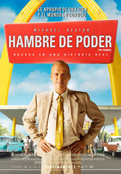

The Founder (El fundador en España y Hambre de poder en Hispanoamérica) es una película biográfica de 2016. Dirigida por John Lee Hancock y por Robert D. Siegel, cuenta la historia de Ray Kroc y su adquisición de la cadena de comida rápida McDonald's.
En los años 50, Ray Kroc, un vendedor de Illinois, conoce a los hermanos Mac y Dick McDonald, que llevan una hamburguesería al sur de California. Impresionado por la velocidad del sistema de cocina, Kroc visualiza el potencial de la franquicia y hábilmente se posiciona para arrebatárselo a los hermanos y crear el hoy imperio de un billón de dólares: McDonald's.
| Personaje/Actriz | Edad |
| Michael Keaton | 71 |
| John Carrol Lynch | 59 |
| Laura Dern | 56 |
| Linda Cardellini | 47 |
| Patrick Wilson | 49 |
| Contáctame | Galería | Más info | John Lee Hancock | Galería John Lee | Robert D.Siegel | Galería Robert | Formulario | Michael Keaton |